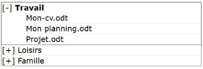

Description

Ce composant permet d'implémenter une arborescence d'options sélectionnable.
Restitution
- Le composant doit posséder un nom accessible (ressource en anglais).
- L'état ouvert ou fermé de chaque niveau de l'arborescence et sa position dans le nombre d'entrée du niveau doivent être vocalisés.
Interactions de base au clavier
Les interactions au clavier sont :
- La flèche gauche permet de fermer un niveau ou d'aller au niveau supérieur.
- La flèche droite permet d'ouvrir un niveau.
- Les flèches haut et bas permettent de circuler dans les options d'un niveau de l'arborescence.
- La touche Entrée actionne l'option sélectionnée.
- Lors du premier accès, la touche Tabulation permet d'atteindre la première entrée de l'arborescence.
- La touche Majuscule + Tabulation permet d'atteindre la dernière entrée activée de l'arborescence dans l'ordre de la séquence de tabulation, en avant ou en arrière.
Motif de conception : Tree View (WAI-ARIA Authoring Practices 1.1)